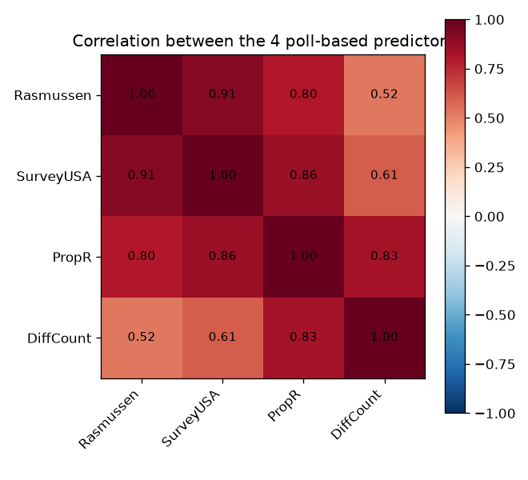
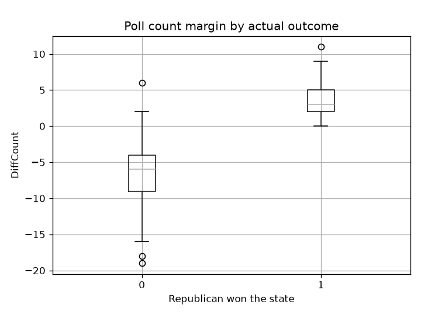
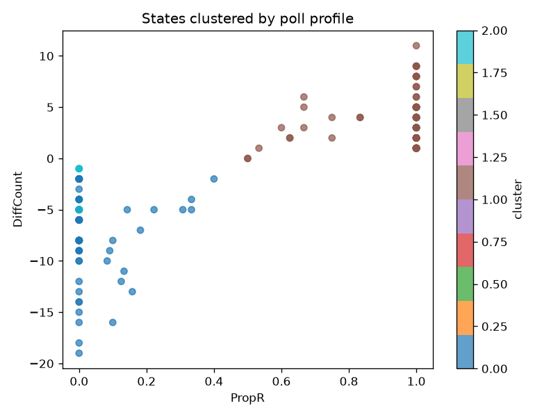

Election Forecasting from State Polling Data
145 state-year polling records across the 2004, 2008, and 2012 US presidential elections. Trained on 2004 and 2008, evaluated on a genuinely held-out 2012, the one thing the original notebook already got right, with a formal check on the multicollinearity it flagged and an unsupervised look at whether poll numbers alone sort states the way the election actually did.
The data


A strong baseline, and real multicollinearity
A single pollster's sign alone gets 94.8% of training states right, a genuinely strong baseline given how one-sided most states are. Using all four poll measures together in one model runs into severe multicollinearity (VIF up to 19.2), dropping to just SurveyUSA and DiffCount, the two-variable combination the original notebook landed on, brings every VIF back under 2.
A genuinely out-of-sample test
| Model | 2012 test accuracy | AUC |
|---|---|---|
| Smart baseline (sign of Rasmussen) | 91.1% | n/a |
| Logistic regression | 97.8% | 0.982 |
| Random forest | 97.8% | 1.000 |
Unsupervised: do poll numbers alone sort states correctly?
Clustering all 145 rows by their four poll measures, no outcome label involved, then checking against the real result afterward.

Strong agreement. Two of the three clusters are entirely Democrat states and one is almost entirely Republican, poll numbers alone sort states into groups that closely track what actually happened, a reassuring sanity check on the polling data itself.
Key findings
- The original's train-2004/2008-test-2012 split was already the right call. This rebuild keeps it and adds a formal comparison against a baseline and a second model.
- The multicollinearity the original noticed is real and severe (VIF up to 19.2 with all four poll variables), confirmed with an actual number rather than a narrative judgment call.
- Both models comfortably beat a strong 91.1% baseline on genuinely unseen 2012 data, reaching 97.8% accuracy.
- Unsupervised clustering on poll numbers alone recovers the real outcome closely (adjusted Rand index 0.77), without ever seeing which party actually won.
Future work
- Extend to more election cycles (2016, 2020, 2024) to get a larger, more statistically meaningful out-of-sample test set.
- Bring in fundamentals-based predictors (incumbency, state partisan lean, economic indicators) alongside the poll numbers, the current model is entirely poll-based.
- Try a proper hierarchical or Bayesian model that pools information across states rather than treating each state-year as fully independent.